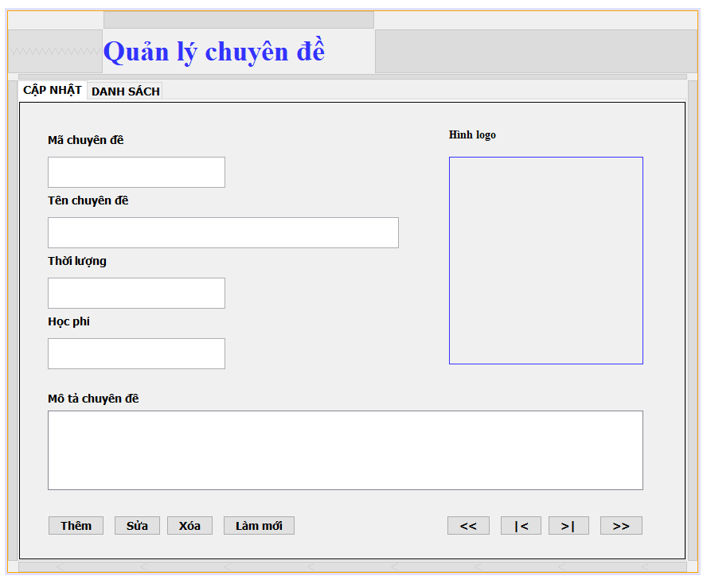
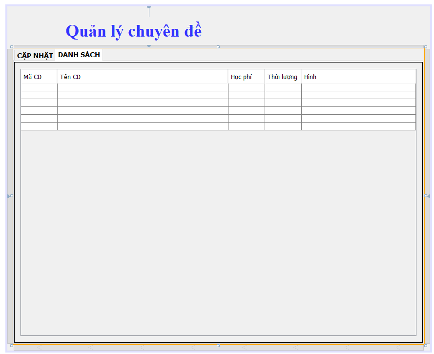

Tab 1

Tab 2

Thêm chuyên đề:
điền các thông tin chuyên đề vào form rồi click nút thêm
sửa chuyên đề:
Chuyển sang tab2 sau đó click đúp chuột vào chuyên đề cần sửa. Sau đó nó
sẽ tự động chuyển sang tab1 cùng với thông tin có sẵn được hiển thị lên
form
sửa thông tin chuyên đề xong click nút sửa
Xóa chuyên đề:
Chuyển sang tab2 sau đó click đúp chuột vào chuyên đề cần Xóa. Sau đó nó
sẽ tự động chuyển sang tab1 cùng với thông tin có sẵn được hiển thị lên
form
click nút xóa
làm mới form
làm mới hết form
click nút làm mới
nút: [<<]
: lấy thông tin của chuyên đề ở đầu danh sách
nút: [>>]
: lấy thông tin của chuyên đề ở cuối danh sách
nút: [|<]
: lấy thông tin của chuyên đề ở phía trước chuyên đề đang được chọn
nút: [>|]
: lấy thông tin của chuyên đề ở phía sau chuyên đề đang được chọn